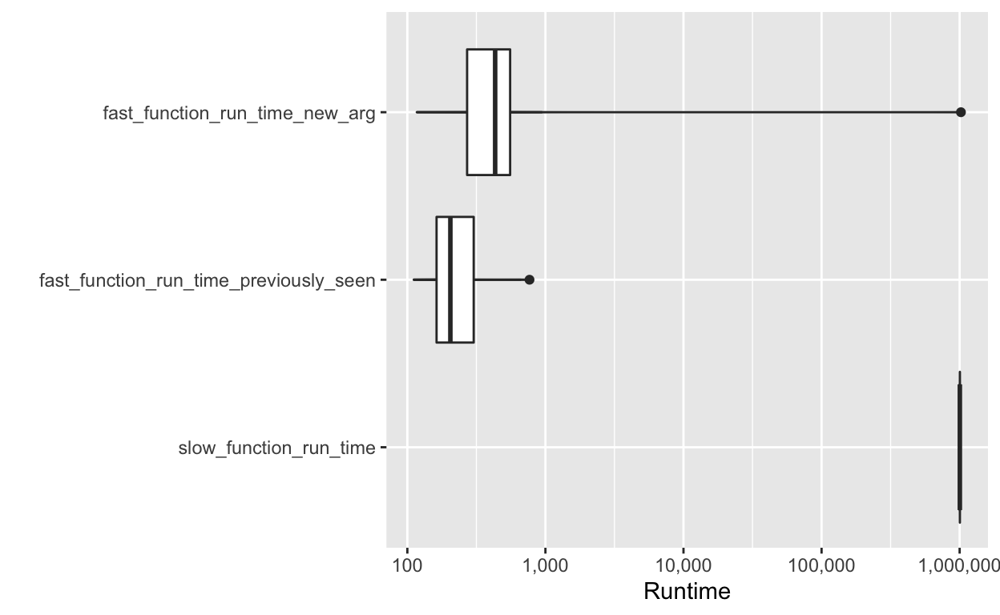
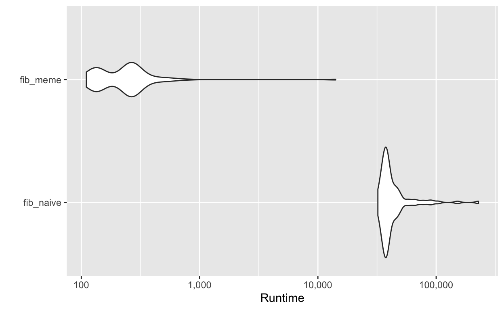

Last chapter we learned about function factories which are functions that creates functions.
Function operators are similar to function factories in that they return functions as output, but a function operator takes one or more functions as the input as well.
Let’s say we wanted to make a function that would square the results of a vector and also tell us which element in the vector it was working on with a purr::map.
This is easy enough to write.
square <- function(x) x ^ 2
talky <- function(x){
print(glue::glue("Processing value: {x}"))
res <- square(x)
print(glue::glue("Returning results: {res}"))
return(res)
}
s <- c(3, 2, 1)
purrr::map(s, talky)## Processing value: 3
## Returning results: 9
## Processing value: 2
## Returning results: 4
## Processing value: 1
## Returning results: 1## [[1]]
## [1] 9
##
## [[2]]
## [1] 4
##
## [[3]]
## [1] 1But what if now I want a function that’s going to speak the results for a cube?
Rather than re-writing talky I can write a function operator which will take in any function as an input
chatty <- function(f) {
force(f)
talkitive_function <- function(x, ...) {
res <- f(x, ...)
print(glue::glue("Processing value: {x}"))
print(glue::glue("Returning results: {res}"))
return(res)
}
return(talkitive_function)
}square <- function(x) x ^ 2
cube <- function(x) x ^ 3
screaming_strings <- function(x, n = 5) paste(rep(x,n),collapse = "")
s <- c(3, 2, 1)
v <- c("a","o","e")
purrr::map_dbl(s, chatty(square))## Processing value: 3
## Returning results: 9
## Processing value: 2
## Returning results: 4
## Processing value: 1
## Returning results: 1## [1] 9 4 1purrr::map_dbl(s, chatty(cube))## Processing value: 3
## Returning results: 27
## Processing value: 2
## Returning results: 8
## Processing value: 1
## Returning results: 1## [1] 27 8 1purrr::map_chr(v, chatty(screaming_strings))## Processing value: a
## Returning results: aaaaa
## Processing value: o
## Returning results: ooooo
## Processing value: e
## Returning results: eeeee## [1] "aaaaa" "ooooo" "eeeee"purrr::map_chr(v, chatty(screaming_strings), n = 30)## Processing value: a
## Returning results: aaaaaaaaaaaaaaaaaaaaaaaaaaaaaa
## Processing value: o
## Returning results: oooooooooooooooooooooooooooooo
## Processing value: e
## Returning results: eeeeeeeeeeeeeeeeeeeeeeeeeeeeee## [1] "aaaaaaaaaaaaaaaaaaaaaaaaaaaaaa" "oooooooooooooooooooooooooooooo"
## [3] "eeeeeeeeeeeeeeeeeeeeeeeeeeeeee"Chapter 9 tried to convince us to stop using for loops for everything.
But, one reason you might use a for loop, is that at least if one iteration fails, you get to keep all the results up to that point
Let’s try to sum a list of vectors.
my_broken_list <- list(
c(1, 2, 3),
c(2, 2, 2),
c("oops","I'm","not a double"),
c(7, -2, 1))#make something the length of my expectation
out <- rep(NA_real_, length(my_broken_list))
for (i in seq_along(my_broken_list)) {
out[[i]] <- as.double(try(sum(my_broken_list[[i]])))
}## Error in sum(my_broken_list[[i]]) :
## invalid 'type' (character) of argument## Warning: NAs introduced by coercionout## [1] 6 6 NA 6However if we tried to do the same thing using a functional
map_out <- map_dbl(my_broken_list, sum)## Error in .Primitive("sum")(..., na.rm = na.rm): invalid 'type' (character) of argumentmap_out## Error in eval(expr, envir, enclos): object 'map_out' not foundFortunately, purr comes with a function operator that allows us to get around this error. It’s called safely
safe_map_out <- map(my_broken_list,purrr::safely(sum) )
safe_map_out %>% str()## List of 4
## $ :List of 2
## ..$ result: num 6
## ..$ error : NULL
## $ :List of 2
## ..$ result: num 6
## ..$ error : NULL
## $ :List of 2
## ..$ result: NULL
## ..$ error :List of 2
## .. ..$ message: chr "invalid 'type' (character) of argument"
## .. ..$ call : language .Primitive("sum")(..., na.rm = na.rm)
## .. ..- attr(*, "class")= chr [1:3] "simpleError" "error" "condition"
## $ :List of 2
## ..$ result: num 6
## ..$ error : NULLtransposeThe book describes using transpose to make the purrr::safely output more friendly. If we learned transpose before, I forgot. So a brief description of purrr::transpose
annoying_list <- rerun(5, x = runif(1), y = runif(5))
annoying_list %>% str()purrr::transpose will turn this list-of-lists into a list of pairs
annoying_list <- rerun(5, x = runif(1), y = runif(5))
annoying_list %>% transpose() %>% str()## List of 2
## $ x:List of 5
## ..$ : num 0.811
## ..$ : num 0.272
## ..$ : num 0.16
## ..$ : num 0.604
## ..$ : num 0.755
## $ y:List of 5
## ..$ : num [1:5] 0.0233 0.5752 0.0721 0.5661 0.583
## ..$ : num [1:5] 0.8961 0.6662 0.0954 0.8268 0.5383
## ..$ : num [1:5] 0.6307 0.0847 0.6438 0.7583 0.5233
## ..$ : num [1:5] 0.0265 0.3312 0.6629 0.6171 0.2426
## ..$ : num [1:5] 0.105 0.285 0.773 0.476 0.422safelyBack to trying to sum our broken_list without using for loops
safe_map_out_transposed <- transpose(map(my_broken_list,purrr::safely(sum) ))
safe_map_out_transposed %>% str()## List of 2
## $ result:List of 4
## ..$ : num 6
## ..$ : num 6
## ..$ : NULL
## ..$ : num 6
## $ error :List of 4
## ..$ : NULL
## ..$ : NULL
## ..$ :List of 2
## .. ..$ message: chr "invalid 'type' (character) of argument"
## .. ..$ call : language .Primitive("sum")(..., na.rm = na.rm)
## .. ..- attr(*, "class")= chr [1:3] "simpleError" "error" "condition"
## ..$ : NULLNow we can easily ask which of our elements lead to problems
ok <- map_lgl(safe_map_out_transposed$error, is.null)
my_broken_list[!ok]Have a bunch of datasets where the models only converge sometimes? Use safely!
fit_model <- function(df) {
glm(y ~ x1 + x2 * x3, data = df)
}
models <- transpose(map(datasets, safely(fit_model)))
ok <- map_lgl(models$error, is.null)
# which data failed to converge?
datasets[!ok]
# which models were successful?
models[ok]possibly() returns a default value
map_dbl(my_broken_list,purrr::possibly(sum,otherwise = 0))## [1] 6 6 0 6auto_browser(): automatically executes browser() inside the function when there’s an error.
my_sum <- function(v){
final_sum = 0
if(!every(v,is.numeric)){
rlang::abort("Not everything is a number!")
}
for(i in v){
final_sum = final_sum + i
}
return(final_sum)
}
map(s,auto_browse(my_sum)) %>% simplify()
map(v,auto_browse(my_sum)) %>% simplify()memoiseMemoization is a method to speed up a function by storing the results of slow function calls and returning the cached results.
Memoized functions can run much faster, but they use more memory.
library(microbenchmark)
library(ggplot2)
slow_function <- function(x) {
Sys.sleep(1)
x * 10 * runif(1)
}
fast_function <- memoise::memoise(slow_function)
fast_function(1)## [1] 1.78387mbm = microbenchmark(
slow_function_run_time = slow_function(1),
fast_function_run_time_previously_seen = fast_function(1),
fast_function_run_time_new_arg = fast_function(2),
times = 10L
)
autoplot(mbm) +
scale_y_log10(labels = scales::comma_format()) +
ylab("Runtime") +
geom_boxplot()## Coordinate system already present. Adding new coordinate system, which will replace the existing one.## Scale for 'y' is already present. Adding another scale for 'y', which will
## replace the existing scale.
memoiseA more likely use of memoise might be calculating fibonacci series
fib_naive <- function(n) {
if (n < 2){
return(1)
}
return(fib_naive(n - 2) + fib_naive(n - 1))
}
fib_meme <- memoise::memoise(function(n) {
if (n < 2){
return(1)
}
fib_meme(n - 2) + fib_meme(n - 1)
})
mbmfib = microbenchmark(
fib_naive = fib_naive(23),
fib_meme = fib_meme(23)
)
autoplot(mbmfib) +
scale_y_log10(labels = scales::comma_format()) +
ylab("Runtime") ## Coordinate system already present. Adding new coordinate system, which will replace the existing one.## Scale for 'y' is already present. Adding another scale for 'y', which will
## replace the existing scale.
system.time(fib_meme(24))## user system elapsed
## 0.000 0.000 0.001system.time(fib_naive(24))## user system elapsed
## 0.057 0.002 0.066Base R provides a function operator in the form of Vectorize(). What does it do? When might you use it?
Description
Vectorize creates a function wrapper that vectorizes the action of its argument FUN.
Usage
Vectorize(FUN, vectorize.args = arg.names, SIMPLIFY = TRUE,
USE.NAMES = TRUE)
Arguments
FUN
function to apply, found via match.fun.
vectorize.args
a character vector of arguments which should be vectorized. Defaults to all arguments of FUN.
SIMPLIFY
logical or character string; attempt to reduce the result to a vector, matrix or higher dimensional array; see the simplify argument of sapply.
USE.NAMES
logical; use names if the first ... argument has names, or if it is a character vector, use that character vector as the names.
Details
The arguments named in the vectorize.args argument to Vectorize are the arguments passed in the ... list to mapply. Only those that are actually passed will be vectorized; default values will not. See the examples.
Vectorize cannot be used with primitive functions as they do not have a value for formals.
It also cannot be used with functions that have arguments named FUN, vectorize.args, SIMPLIFY or USE.NAMES, as they will interfere with the Vectorize arguments. See the combn example below for a workaround.
Value
A function with the same arguments as FUN, wrapping a call to mapply.Read the source code for possibly(). How does it work?
possibly
#> function (.f, otherwise, quiet = TRUE)
#> {
#> .f <- as_mapper(.f)
#> force(otherwise)
#> function(...) {
#> tryCatch(.f(...), error = function(e) {
#> if (!quiet)
#> message("Error: ", e$message)
#> otherwise
#> }, interrupt = function(e) {
#> stop("Terminated by user", call. = FALSE)
#> })
#> }
#> }
#> <bytecode: 0x17ce470>
#> <environment: namespace:purrr>Read the source code for safely(). How does it work?
safely
#> function (.f, otherwise = NULL, quiet = TRUE)
#> {
#> .f <- as_mapper(.f)
#> function(...) capture_error(.f(...), otherwise, quiet)
#> }
#> <bytecode: 0x4b1c0e0>
#> <environment: namespace:purrr>
purrr:::capture_error
#> function (code, otherwise = NULL, quiet = TRUE)
#> {
#> tryCatch(list(result = code, error = NULL), error = function(e) {
#> if (!quiet)
#> message("Error: ", e$message)
#> list(result = otherwise, error = e)
#> }, interrupt = function(e) {
#> stop("Terminated by user", call. = FALSE)
#> })
#> }
#> <bytecode: 0x4b72eb8>
#> <environment: namespace:purrr>Let’s say we have a list of urls we want to download and we want to store somewhere
urls <- c(
"adv-r" = "https://adv-r.hadley.nz",
"r4ds" = "http://r4ds.had.co.nz/"
# and many many more
)
path <- paste(tempdir(), names(urls), ".html")We learned in Chapter 9 that we can use walk2 to download these files
walk2(urls, path, download.file, quiet = TRUE)But what if we wanted to download 10,000 urls? And this will take a while so we want to add a few extra features like a bit of a delay to not overload the server and to show a dot every few URLS so we know our function is still running.
We could do it in a for loop
for(i in seq_along(urls)) {
Sys.sleep(0.1)
if (i %% 10 == 0) cat(".")
download.file(urls[[i]], paths[[i]])
}But this makes things hard to reuse and everytime we need to change something we have to go into the loop and edit
Let’s try with function operators
delay_by <- function(f, amount) {
force(f)
force(amount)
function(...) {
Sys.sleep(amount)
f(...)
}
}We can then use the original walk2 command
walk2(urls, path, delay_by(download.file, 0.1), quiet = TRUE)Then we can create a function to display an occasional dot using the function factory trick of a stateful function and the super assigment operator to rebind an index value in the enclosing environment.
dot_every <- function(f, n) {
force(f)
force(n)
i <- 0
function(...) {
i <<- i + 1
if (i %% n == 0) cat(".")
f(...)
}
}
walk(1:100, dot_every(runif, 10))
walk(1:100, dot_every(runif, 20))I had questions about this behavior though
dot_every_2 <- function(f, n) {
force(f)
force(n)
print(glue::glue("This is n: {n}"))
i <- 0
function(...) {
print(glue::glue("This is i: {i}"))
i <<- i + 1
if (i %% n == 0) cat(".")
f(...)
}
}
count_test <- dot_every_2(runif,1)Then we can express our original walk2 like this
walk2(
urls, path,
download.file %>% dot_every(10) %>% delay_by(0.1),
quiet = TRUE
)Weigh the pros and cons of download.file %>% dot_every(10) %>% delay_by(0.1) vs download.file %>% delay_by(0.1) %>% dot_every(10)
Should you memoise file.download()? Why/why not?